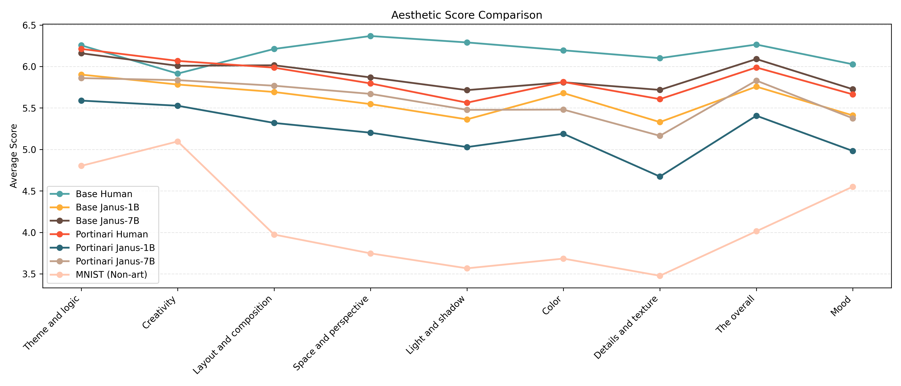

Galeria


Este projeto investiga a possibilidade de realizar avaliação estética computacional de imagens no contexto da criatividade computacional, com foco em pinturas geradas por modelos de inteligência artificial. Apesar dos avanços recentes dos sistemas generativos visuais, a avaliação estética permanece como um dos principais desafios da área, sendo frequentemente tratada como inerentemente subjetiva ou dependente exclusivamente do julgamento humano. Em contraste com essa perspectiva, este trabalho explora a hipótese de que determinados critérios estéticos podem ser formalizados e modelados computacionalmente de maneira objetiva a partir de avaliações consistentes realizadas por especialistas.
Para isso, foi investigado o uso do APDDv2 e do modelo ArtCLIP, treinado com anotações produzidas por especialistas em artes visuais, como uma possível heurística computacional para estimar valor estético. A longo prazo, abordagens desse tipo podem contribuir para o desenvolvimento de ferramentas capazes de auxiliar processos criativos, oferecendo formas de análise estética integradas a fluxos de produção artística mediados por inteligência artificial.
Os primeiros estudos que motivaram esta pesquisa foram realizados entre 2023 e 2024 e partiram de uma questão aparentemente simples: modelos de IA são capazes de produzir imagens consideradas visualmente desagradáveis? E, caso sejam, essa capacidade poderia representar uma habilidade criativa relevante? Com a rápida evolução dos modelos generativos, a investigação foi gradualmente reformulada para abordar questões mais amplas relacionadas à avaliação estética automatizada. Ao longo do processo, diversos experimentos exploratórios foram conduzidos, embora muitos deles não tenham sido incorporados à versão final do trabalho por questões de escopo, síntese e relevância.
Uma das questões centrais da pesquisa envolve compreender o próprio conceito de estética. O termo deriva do grego aisthētikos, tal conceito é usado de diferentes formas, dentre elas: como sinônimo de percepção humana, de beleza e de estilo. Sobre o aspecto de percepção humana, a própria etimologia da palavra já reforça essa ideia, que também é retomada quando estudamos os fundamentos de cor, forma e composição além de outros elementos da linguagem visual, a fim de melhor comunicar uma ideia através de uma imagem. Já o dicionário trata como sinônimo de beleza, estudo do belo ou algo harmonioso. Tal conceito derivou de estudos sobre a beleza e o gosto, visando compreender como os seres humanos interpretam e avaliam obras de arte. Outro sentido que ainda pode ser atribuído ao termo estética é o estilo de uma obra ou as características de traçado que tornam reconhecíveis os trabalhos de, por exemplo, um pintor. Ao longo da tradição ocidental, a compreensão da beleza passou por transformações significativas. Para pensadores como Platão e Aristóteles, o belo estava associado à ordem, à proporção, à harmonia e à verdade. Durante a Idade Média e o Renascimento, essa concepção foi reforçada pela busca de princípios universais capazes de explicar a beleza presente na natureza e nas produções humanas. A partir da modernidade, entretanto, o foco deslocou-se progressivamente para o observador. Filósofos como David Hume e Immanuel Kant passaram a investigar o papel do gosto e da experiência subjetiva na apreciação estética, abrindo espaço para interpretações que compreendem a beleza como um fenômeno cultural, histórico e contextual.
Apesar dessas divergências, observa-se uma constante ao longo dos séculos: a estreita relação entre beleza, verdade e bem. Desde a filosofia clássica até diversos pensadores contemporâneos, o belo é frequentemente associado à capacidade humana de reconhecer padrões, significados e valores que transcendem a experiência imediata. A beleza manifesta-se quando o caos é transformado em ordem, quando a matéria recebe forma, propósito e intenção. Nesse sentido, a arte, a arquitetura, a música e mesmo a ciência tornam-se expressões da busca humana por compreender e organizar o mundo. Por essa razão, a experiência estética ultrapassa o mero prazer sensorial. O encontro com o belo pode provocar contemplação, admiração e transformação interior. Seja interpretada como reflexo de leis universais, como expressão da criatividade humana ou como forma de transcendender, seja o tempo, seja aproximando-se do divino. Portanto, a beleza desempenha um papel fundamental na elevação do espírito. Ela conecta o visível ao invisível, o temporal ao eterno, a Terra ao Céu, convidando o ser humano a superar suas limitações imediatas e a aproximar-se de ideais mais elevados de verdade, bondade e plenitude.
Essa perspectiva influencia diretamente os projetos que desenvolvo. Minha busca por excelência não está relacionada apenas ao desempenho técnico ou à resolução de problemas, mas também à tentativa de criar artefatos, imagens e experiências que possuam significado, coerência e valor estético. Em última análise, este projeto nasce da convicção de que a beleza importa e de que compreender seus mecanismos pode contribuir para o desenvolvimento de sistemas criativos mais ricos, expressivos e humanamente relevantes.
A metodologia está estruturada em cinco núcleos experimentais projetados para testar a robustez e o poder discriminativo do ArtCLIP. Primeiramente, comparamos obras de arte criadas por humanos do conjunto de dados APDDv2 com contrapartes sintéticas, a fim de avaliar diferenças de pontuação de base. Em seguida, analisamos a influência da riqueza semântica ao comparar descrições de pinturas do artista brasileiro Cândido Portinari escritas por humanos versus descrições geradas por IA. Depois, verificamos a capacidade do modelo de discriminar conteúdos artísticos de não artísticos utilizando o conjunto de dados MNIST. Por fim, avaliamos a estabilidade do modelo por meio de análises de robustez envolvendo ruído controlado e corrupção visual, bem como experimentos de consistência temporal utilizando sequências de imagens com modificações locais progressivas. Para mais informações acesse a página do trabalho na qual está disponível o artigo associado a esse trabalho.
Ferramentas utilizadas: O trabalho foi desenvolvido utilizando as bases de dados: APDDv2, Projeto Portinari (obtida via crawler do respectivo site), MNIST, e uma base de dados de Short Videos do Canal Artsy Lola Co do YouTube (também obtida via crawler). Para a implementação dos algoritmos utilizou-se a linguagem Python e um computador de alto desempenho equipado com um processador Ryzen 9 5950X de 16 núcleos, 64 GB de RAM e uma placa gráfica RTX 3090 Ti com 24 GB de memória. Também foram empregados modelos de inteligência artificial generativa, incluindo o ArtClip, a família Janus-Pro da DeepSeek e o Stable Diffusion.
Os resultados indicam que o ArtCLIP apresenta um comportamento consistente com o julgamento de especialistas humanos, sendo capaz de diferenciar níveis de qualidade estética entre imagens criadas por humanos e imagens geradas por modelos com diferentes capacidades. Esses achados sugerem que heurísticas estéticas baseadas em conhecimento especializado podem desempenhar um papel importante no desenvolvimento de sistemas criativos computacionais, oferecendo uma alternativa escalável e formal para a avaliação estética.
Além dos resultados obtidos, o projeto proporcionou aprendizados significativos sobre pesquisa científica, design experimental e análise de dados. Ao longo do trabalho, compreendi a importância de planejar cuidadosamente cada etapa da investigação, definindo com clareza quais hipóteses estão sendo testadas, quais variáveis estão sendo manipuladas, quais comparações são válidas e quais bases de dados são adequadas para responder às perguntas propostas. Também aprendi a identificar e evitar "acidentes matemáticos" e interpretações equivocadas decorrentes de escolhas metodológicas inadequadas.
Outro aprendizado importante envolveu o tratamento e a preparação dos dados. Questões aparentemente simples, como a presença de valores ausentes ou nulos, podem influenciar significativamente os resultados estatísticos quando não são tratadas adequadamente. O trabalho reforçou a importância de procedimentos como limpeza de dados, remoção criteriosa de registros inconsistentes e validação cuidadosa dos experimentos antes da interpretação dos resultados.
A pesquisa também contribuiu para o desenvolvimento das minhas habilidades de escrita científica, comunicação de resultados e construção de narrativas de pesquisa. Aprendi não apenas a conduzir experimentos, mas também a estruturar argumentos, justificar escolhas metodológicas e apresentar o trabalho de forma clara para diferentes públicos.
Por fim, este projeto ampliou significativamente minha formação interdisciplinar. Paralelamente aos estudos em inteligência artificial e ciência de dados, aprofundei investigações sobre arte, design, estética e filosofia da beleza, além de participar de diversas trocas acadêmicas com colegas e professores de diferentes áreas. Destaco especialmente as contribuições e discussões realizadas com pesquisadores da Universidade de Coimbra e da Escola de Design da UFMG, que enriqueceram a pesquisa ao incorporar perspectivas complementares sobre criatividade, percepção estética e produção artística.
